1 · Horizonte nítido
Una forma sólida sobre el horizonte deja dos ecos separados debajo.
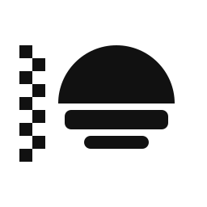
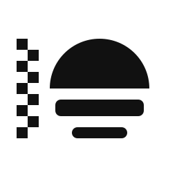
Escalas reales: 64 / 32 / 16 px. Abrir SVG
Checkpoint de ocho símbolos, sin M. Recomendación provisional: 1 · Horizonte nítido. Alternativas: 4 · Portal abierto y 8 · Ruido resuelto.
Lámina vectorial y pruebas preparadas para Claude; no se ejecutó render ni inspección raster. Los símbolos no dependen de fuentes.
Lámina de ocho conceptos + H / FT · Escalas, giros, espejo y pares de biblioteca · Resultado completo
Una forma sólida sobre el horizonte deja dos ecos separados debajo.



Escalas reales: 64 / 32 / 16 px. Abrir SVG
Un ángulo firme y su reflejo desplazado distinguen original y apariencia.
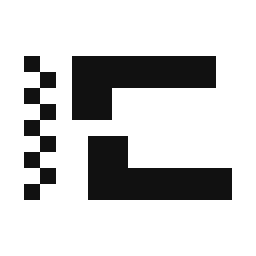
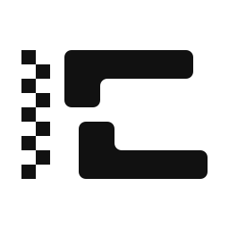
Escalas reales: 64 / 32 / 16 px. Abrir SVG
Un anillo de peso constante aísla un único dato cuadrado.
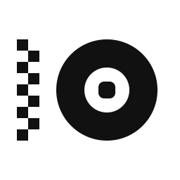
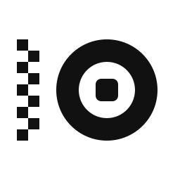
Escalas reales: 64 / 32 / 16 px. Abrir SVG
Un portal encuadra un horizonte que continúa por una apertura lateral.
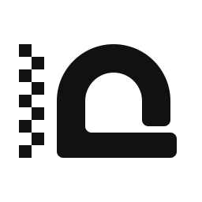
Escalas reales: 64 / 32 / 16 px. Abrir SVG
Un cuadrado vacío permanece inequívoco dentro de una masa sólida.
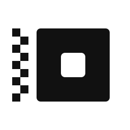
Escalas reales: 64 / 32 / 16 px. Abrir SVG
Una cuenca geométrica sostiene un dato separado, sin paisaje literal.
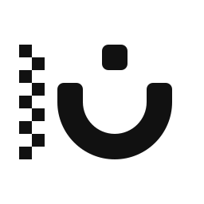
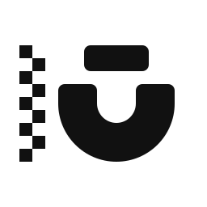
Escalas reales: 64 / 32 / 16 px. Abrir SVG
Una duna vacía corta un plano sólido sobre un horizonte ajedrezado.
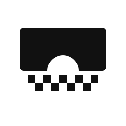
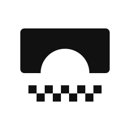
Escalas reales: 64 / 32 / 16 px. Abrir SVG
La alternancia de píxeles converge en un bloque sólido de información.
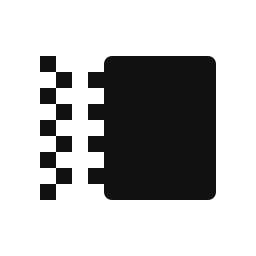
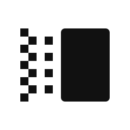
Escalas reales: 64 / 32 / 16 px. Abrir SVG
Fase 6. Sin kit ni despliegue.